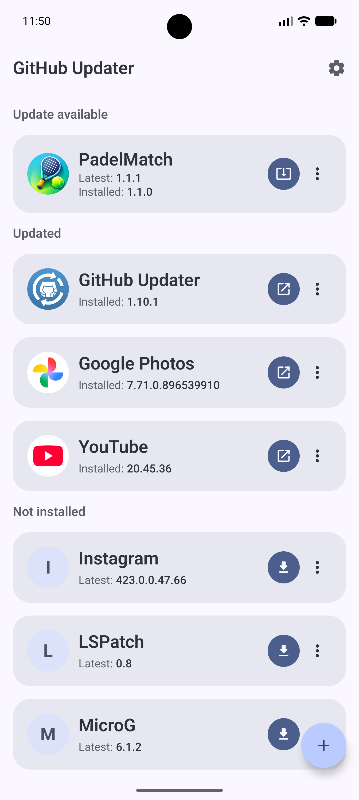
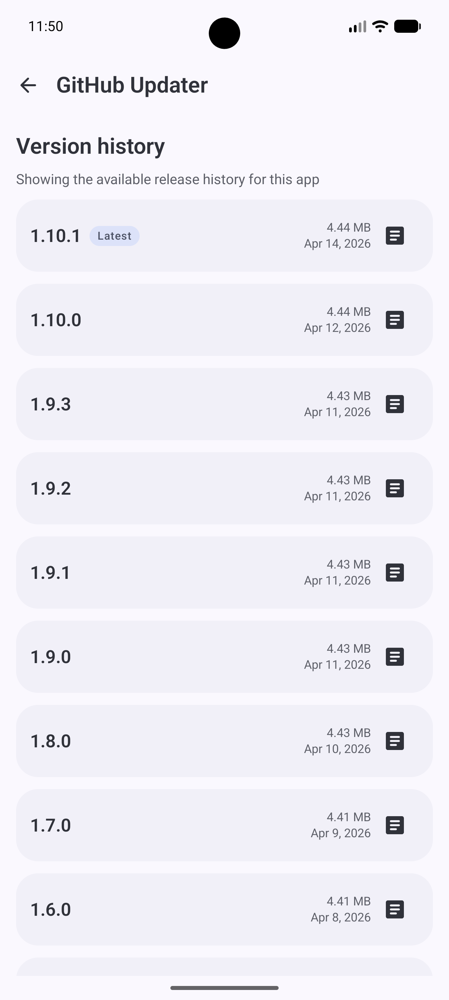
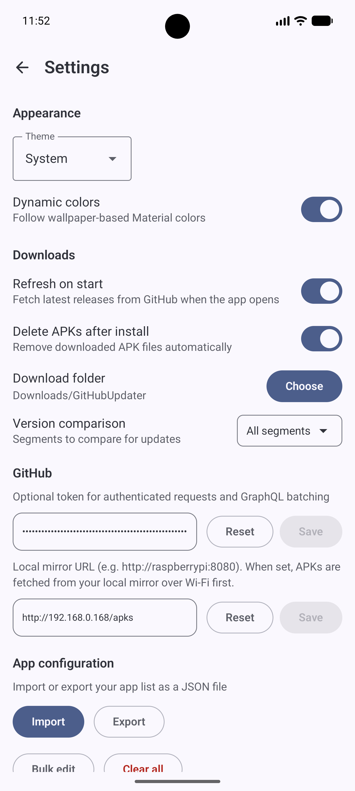

Android release tracking without the Play Store
Keep your favorite GitHub-hosted apps current, installable, and easy to manage.
GitHub Updater watches release feeds, checks what is already installed on your device, and turns scattered APK downloads into one focused update workflow.
- Android 10+ support
- GitHub REST plus GraphQL batching
- Local mirror support for faster LAN installs

`main-list.png`
Add the real main screen capture here so the hero shows the actual app UI.
Features
Built for people who install Android apps directly from GitHub releases.
The app stays close to the actual release pipeline: tags, APK assets, changelogs, package names, and install state.
Release-aware tracking
Monitor GitHub repos for the newest release, compare it to the installed version, and show when an update is ready.
Install and update flow
Start installs and updates from one place, with download progress, installer handoff, and uninstall support built into the same flow.
Version history with changelogs
Open a detail screen for release history, browse previous versions, and read markdown changelogs without leaving the app.
Smart APK matching
Use optional regex rules to pick the correct APK asset and extract version names from release tags or filenames.
Config import and export
Back up your app catalog as JSON, import it on another device, or bulk edit your managed app list when you need to move quickly.
Android-first settings
Choose theme mode, dynamic colors, download location, APK cleanup behavior, refresh-on-start, version comparison depth, and more.
How it works
From release feed to installed update, the app keeps the path short.
Add an app definition
Store the display name, package name, GitHub owner/repo, and any optional APK or version regex needed for matching.
Refresh local or remote state
Use cached remote data for a fast local status check or force a fresh refresh when you want the latest upstream release data.
Download from the best source
Fetch directly from GitHub or from a local mirror on your network, while reusing valid APKs already cached on the device.
Hand off to Android installer
The app downloads the APK, launches the platform installer, and keeps progress and result handling connected to the update state.
Configuration
Flexible enough for power users, still simple enough for daily updates.
GitHub Updater is deliberately user-managed. There is no hidden remote catalog, no Play Store dependency, and no assumption that every project ships assets the same way.
Optional GitHub token
Unlock authenticated requests and GraphQL batching for the main list.
Local mirror base URL
Prefer APK downloads from a Raspberry Pi or other LAN mirror before falling back to GitHub.
Custom download folder
Use the default `Download/GitHubUpdater/` location or point downloads somewhere else.
Screenshots
Real app screenshots belong here.
The gallery is wired for real device captures. Drop your screenshots into `docs/assets/screenshots/` using the filenames below and GitHub Pages will publish them automatically.
`main-list.png`
Main list with update states and primary actions

`version-history.png`
Release history with changelog viewing

`settings.png`
Settings, import/export, token, and mirror options
Why this app exists
Useful when GitHub is the release channel and manual APK management starts getting tedious.
Privacy-conscious users
Follow upstream releases from developers who publish outside traditional app stores.
ROM and sideloading enthusiasts
Keep a curated set of apps current without checking each repository manually.
Small household mirrors
Point devices at a local mirror and reduce repeated downloads across your network.
FAQ
Common questions
No. It manages discovery and download, then hands installation off to the standard Android installer with user confirmation.
Yes. It supports a cached local-status refresh path, and it can also download APKs from a configured local mirror.
Yes. The managed catalog can be exported and imported as JSON, and internal IDs are reassigned automatically on import.
Get started